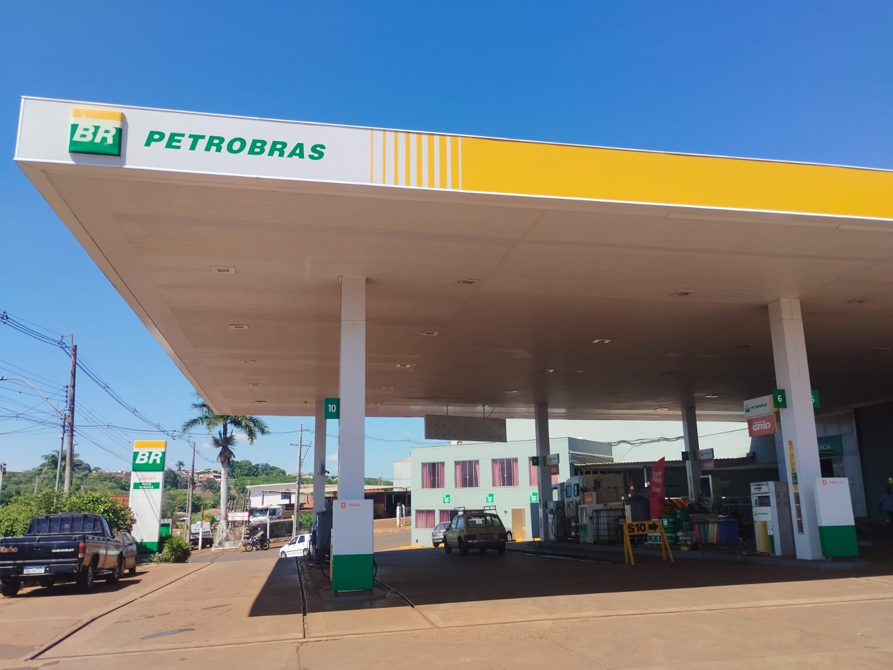
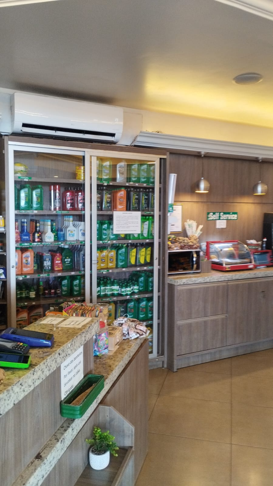
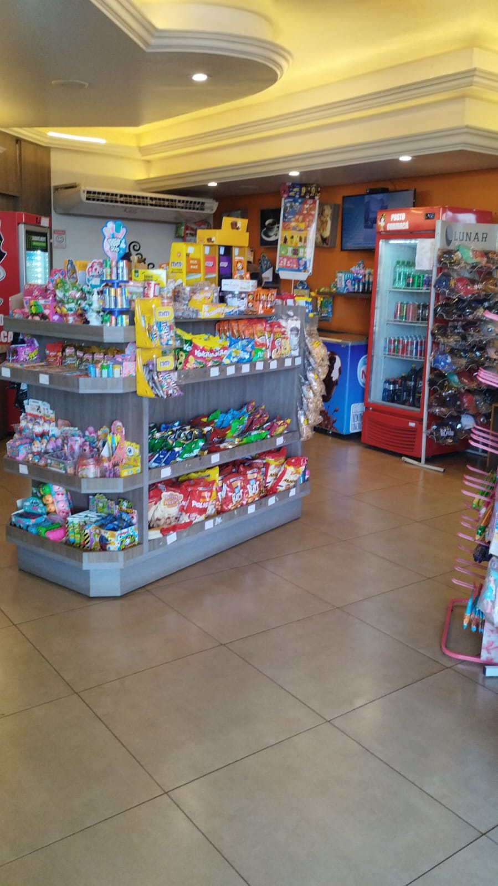
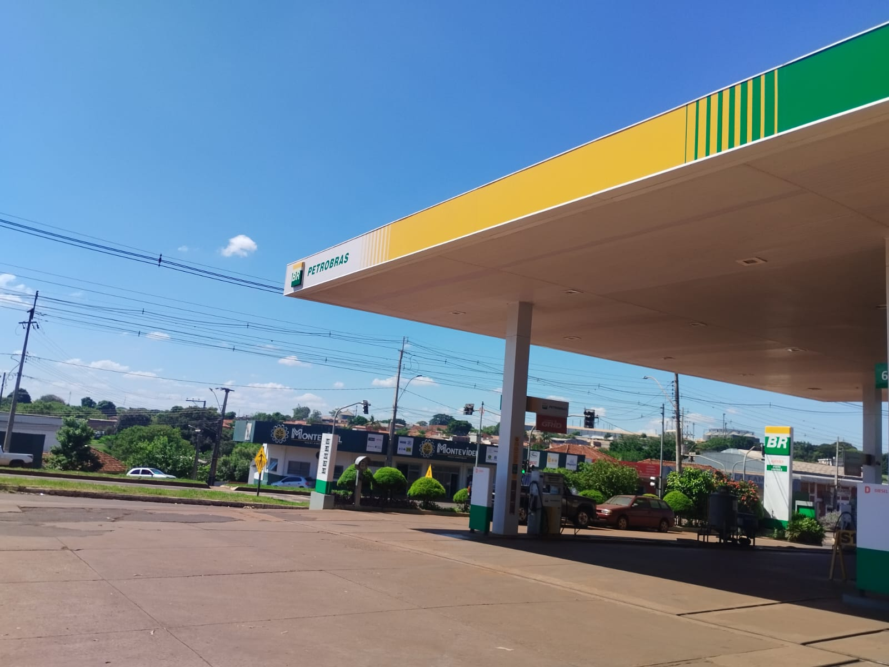
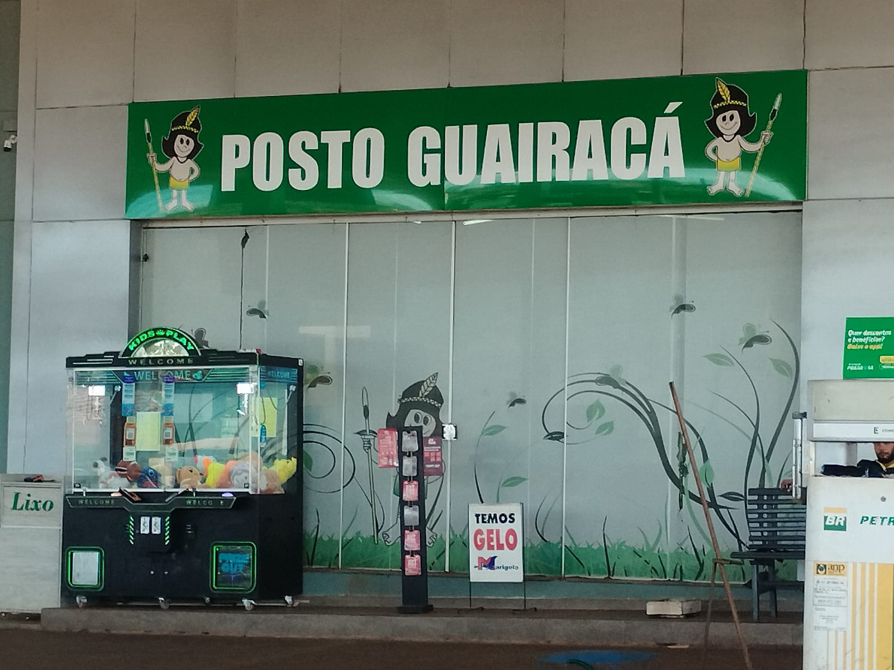

Posto de Combustível • Cambará - PR
O Posto Guairacá Cambará é uma excelente referência para quem está na estrada, oferecendo praticidade, conforto e atendimento de qualidade em uma localização estratégica na BR-369.
Situado no trajeto entre o interior de São Paulo e Londrina/PR, o posto atende motoristas e viajantes com estrutura completa e conveniência.
Com ambiente organizado e atendimento diferenciado, é um ponto de parada confiável para sua viagem.
Endereço: Rod. BR-369, km 19, nº 1137
Cidade: Cambará - PR
WhatsApp: (43) 3532-1132
Falar no WhatsApp Ligar agora✔ Localização estratégica na BR-369 ✔ Ponto de apoio para viajantes ✔ Abastecimento com praticidade ✔ Conveniência e atendimento de qualidade ✔ Estrutura organizada ✔ Excelente opção no trajeto SP / Londrina



